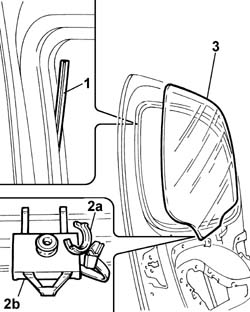

7005D15 front side door descending window glass r r
- Path
- Procedures > 70 FITTINGS > 7005 PASSENGER COMPARTMENT FRONT SIDE DOORS > 7005D front side door window glasses > 7005D15 front side door descending window glass r r
- Kind
- repair procedure (removal / refitting; the operation number is the code)
- Applies to
- all engines; all production periods
- Interactive page
- https://sloeber94.github.io/elrnDB-fDbl/en/#/2585002
Applies to: all engines; all production periods; only with equipment: Cargo trim level
 Removing
Removing
 Refitting
RefittingOp. 7005D38 FRONT SIDE DOOR MANUAL WINDOW MECHANISM HANDLE / RING NUT - R.R.
Op. 7005E10 FRONT SIDE DOOR INTERIOR PANEL - R.R.
Op. 7005A04 FRONT SIDE DOOR WATER GUARD PROTECTION - R.R. OR POSITION WITH DOOR PANEL REMOVED
Op. 7005D18 FRONT SIDE DOOR DESCENDING WINDOW GLASS CHANNEL (ONE), LEFT OR RIGHT - R.R
Applies to: all engines; all production periods; only with equipment: Cargo trim level
Refitting
RemovingOp. 7005D18 FRONT SIDE DOOR DESCENDING WINDOW GLASS CHANNEL (ONE), LEFT OR RIGHT - R.R
Op. 7005A04 FRONT SIDE DOOR WATER GUARD PROTECTION - R.R. OR POSITION WITH DOOR PANEL REMOVED
Op. 7005E10 FRONT SIDE DOOR INTERIOR PANEL - R.R.
Op. 7005D38 FRONT SIDE DOOR MANUAL WINDOW MECHANISM HANDLE / RING NUT - R.R.
Check, by opening and closing a few times, that the window moves freely on its guides.
Applies to: engines: 1.2 8v, 1.6 16v, 1.3 JTD 16V, 1.9 JTD 8V, 1.9 DIESEL; all production periods; only with equipment: Electric front windows and Cargo trim level
Removing
RefittingOp. 7005E10 FRONT SIDE DOOR INTERIOR PANEL - R.R.
Op. 7005A04 FRONT SIDE DOOR WATER GUARD PROTECTION - R.R. OR POSITION WITH DOOR PANEL REMOVED
Op. 7005D18 FRONT SIDE DOOR DESCENDING WINDOW GLASS CHANNEL (ONE), LEFT OR RIGHT - R.R
Applies to: engines: 1.2 8v, 1.6 16v, 1.3 JTD 16V, 1.9 JTD 8V, 1.9 DIESEL; all production periods; only with equipment: Electric front windows and Doblò trim level
Op. 7005E18 FRONT SIDE DOOR ARMREST - R.R.
Op. 7005E38 FRONT SIDE DOOR INTERIOR HANDLE- R.R.
Op. 7005E30 ODDMENTS POCKET ON FRONT SIDE DOOR - R.R.
Op. 7005E10 FRONT SIDE DOOR INTERIOR PANEL - R.R.
Op. 7005A05 FRONT SIDE DOOR WATER GUARD PROTECTION- R.R. OR ARRANGE
Op. 7005D23 FRONT SIDE DOOR DESCENDING WINDOW GLASS GUIDE (ONE), LEFT OR RIGHT - R.R
Op. 7005D18 FRONT SIDE DOOR DESCENDING WINDOW GLASS CHANNEL (ONE), LEFT OR RIGHT - R.R
1. Prise the window top guide slightly off its seating.
2. Open the safety stop (2a) and remove the window from its mounting (2b) on the guide.
3. Carefully remove the window.

Applies to: engines: 1.2 8v, 1.6 16v, 1.3 JTD 16V, 1.9 JTD 8V, 1.9 DIESEL; all production periods; only with equipment: Electric front windows and Doblò trim level
Refitting
RemovingCheck the condition of the window.
Fit the window in its seating and secure it to the mounting on the guide, closing the safety stop.
Reposition the window top guide.
Op. 7005D18 FRONT SIDE DOOR DESCENDING WINDOW GLASS CHANNEL (ONE), LEFT OR RIGHT - R.R
Op. 7005D23 FRONT SIDE DOOR DESCENDING WINDOW GLASS GUIDE (ONE), LEFT OR RIGHT - R.R
Op. 7005A05 FRONT SIDE DOOR WATER GUARD PROTECTION- R.R. OR ARRANGE
Op. 7005E10 FRONT SIDE DOOR INTERIOR PANEL - R.R.
Op. 7005E30 ODDMENTS POCKET ON FRONT SIDE DOOR - R.R.
Applies to: engines: 1.2 8v, 1.6 16v, 1.3 JTD 16V, 1.9 JTD 8V, 1.9 DIESEL; all production periods; only with equipment: Electric front windows and Cargo trim level
Op. 7005D18 FRONT SIDE DOOR DESCENDING WINDOW GLASS CHANNEL (ONE), LEFT OR RIGHT - R.R
Op. 7005A04 FRONT SIDE DOOR WATER GUARD PROTECTION - R.R. OR POSITION WITH DOOR PANEL REMOVED
Applies to: engines: 1.2 8v, 1.6 16v, 1.3 JTD 16V, 1.9 JTD 8V, 1.9 DIESEL; all production periods; only with equipment: Electric front windows
Connect the battery negative terminal.
Check, by opening and closing a few times, that the window is moving freely on its guides.
Topics linked from this page (11)
- 7005A04 front side door water guard protection - r r or replace with door panel removed
- 7005A05 front side door water guard protection r r or arrange
- 7005D14 front side door descending window glass - r r with door panel (and mount frame) removed
- 7005D18 front side door descending window glass channel r r
- 7005D22 front side door descending window glass guide (one) - r r with door panel (and support frame) removed
- 7005D23 front side door descending window glass guide one r r
- 7005D38 front side door manual window mechanism handle ring-nut - r r
- 7005E10 front side door inner panel - r r for replacement
- 7005E18 front side door arm rest r r
- 7005E30 object pouch on one front side door r r
- 7005E38 front side door interior handle-r r